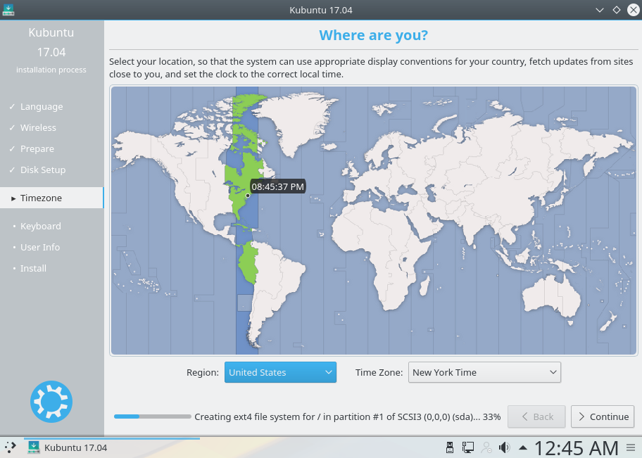
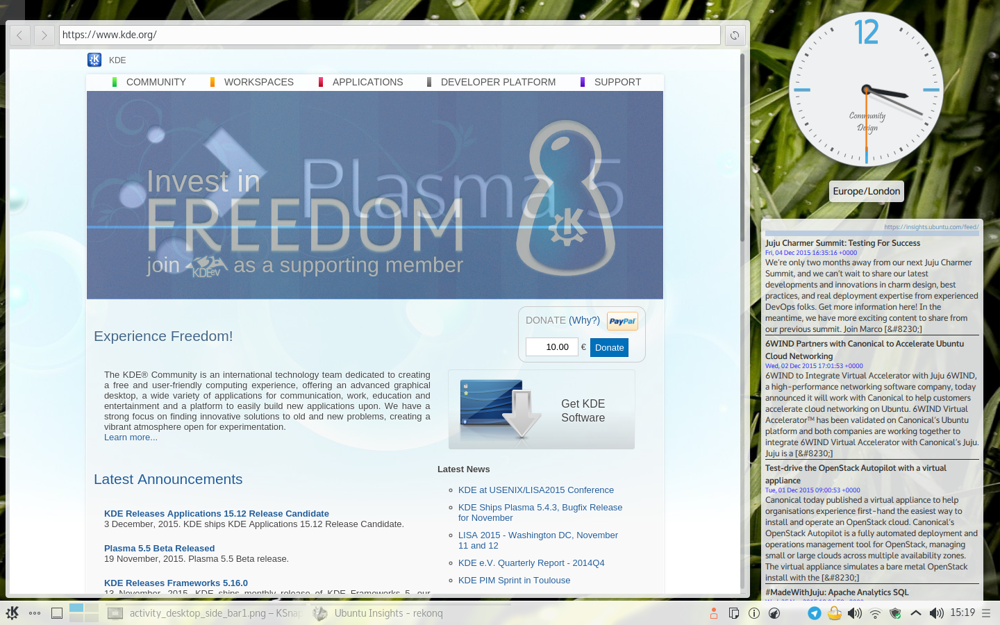

Welcome to Kubuntu’s Documentation!¶
Contents:
Welcome to Kubuntu¶

Kubuntu is a user-friendly Linux-based operating system that use the KDE Plasma Desktop. With a predictable six-month release cycle as part of the Ubuntu project, Kubuntu is the Linux distribution for everyone.
Kubuntu includes more than 1,000 default packages (applications or utilities) and has access to more than 64,000 other packages to suit your needs. Kubuntu is based on the Linux kernel and includes the core Ubuntu applications as well as KDE software. Kubuntu‘s core applications include software for the most common needs, like:
- Browsing the web.
- Personal Information Manager which includes email.
- Office applications
- Playing multimedia files.
- Plus much more!
The Kubuntu Philosophy¶
- Kubuntu will always use the solid base of the Ubuntu project, plus the latest from the KDE project. As part of the Ubuntu project and community, Kubuntu will continue to use the infrastructure and support that the Ubuntu project offers. We will strive to be the best KDE based Linux distribution available.
- Kubuntu will always be free of charge. There is no extra fee for an enterprise edition; we make our best work available to everyone on the same free terms.
- Kubuntu will always include the best translations and accessibility infrastructure that the free software community has to offer, to make Kubuntu usable by as many people as possible.
- Kubuntu will always be committed to the principles of free software and open source development; we shall encourage people to use free and open source software, improve it, and pass it on.
What is Linux?¶
Linux is an operating system kernel that resembles the Unix operating system. The kernel is the main software required for any operating system, providing a communication bridge between hardware and software. Linux has become a leading element of the worldwide movement to embrace free and open source software. The term “GNU/Linux” is a way of referring to operating systems based on the Linux kernel combined with parts from the GNU Project.
What is KDE?¶
KDE is an international technology community that creates and supports free software for desktop and portable computing. Among KDE‘s products are a modern desktop system for Linux and Unix platforms, comprehensive office productivity and groupware suites, as well as hundreds of software applications in various categories including internet and web applications, multimedia, entertainment, education, graphics, and software development. KDE software is translated into more than 65 languages and is built for ease of use with modern accessibility principles in mind. KDE‘s full-featured applications run natively on Linux, BSD, Solaris, Windows, and Mac OS X. The KDE Workspace is the default desktop for Kubuntu.
Thank You!¶
The entire Kubuntu team thanks you for choosing Kubuntu!
| Authors: | Kubuntu Team |
|---|---|
| Version: | 17.10 ; Released: WIP |
Installation¶
Why try Kubuntu?¶
There are many good reasons to install Kubuntu! Some of them include:
- Kubuntu makes your PC friendly.
- Kubuntu is an operating system built by a friendly worldwide team of expert developers. It contains all the applications you need: web browser, office suite, media apps, instant messaging, and many others. For a list of the included software, see the Software page.
- Kubuntu is a free, open-source alternative to Windows and Mac OS X.
- Easily install beside, or instead of, Windows.
Preparing the Installation media¶
Getting the ISO(Disc Image):
Download it though Get Kubuntu.
Checking the MD5SUM¶
Doing this will make sure your download completed fully and has given you a fully working ISO to boot and perhaps later install from.
From Windows XP -> 7 -> 8 -> 10¶
Microsoft Windows does not have any built-in tools for MD5SUM but they do provide some decent documentation and a tool for checking the MD5SUM. How-To-Geek also provides some reading material if you want to understand the technology behind MD5SUM if you like.
From Mac OS X¶
Open the Terminal app, then navigate to the directory where the ISO is saved. Run:
md5 -r kubuntu-17.04-desktop-amd64.iso
And compare the output to the hashes page for the ISO file.
Windows 7/8¶
USB/Flash Drives¶
For a GUI (Graphic User Interface) we use UNetBootin.
If you choose the Diskimage option you use the ... button to select your downloaded ISO. Then click OK.

Warning
Pay special attention when selecting the right USB device under ‘Drive’
Mac OS X¶
Burn an installer DVD using Disk Utility.
Existing Kubuntu Install¶
USB/Flash Drives¶
Since UNetBootin is a cross-platform application we will be using the same instructions from USB/Flash Drives
Warning
Be extremely careful to set /dev/sdX to the right value, if you point it to your hard drive you will wipe the disk.
DVD¶

Look for More actions... click it then pick Burn image... from the list of actions

Then you select the ISO(Disk Image) that you want to burn to the DVD from your computer.
Note
Most torrent and browsers store your downloads in the ‘Download’ directory.
Note
Most of the default setting for K3b for DVD burning are fine
Other Linux Distributions¶
GNOME Environment¶
USB/Flash Drives¶
For USB/Flash Drives we’ll be stick to using UNetBootin from this tutorial: USB/Flash Drives

Install Process¶
Note
You will need to press a special key on the keyboard in order to boot from your chosen Installation Media. Ex: Esc, F2, F10, F12, or Del it all depends on the OEM(Original Equipment Manufacturer)
First we’ll need the Kubuntu Disk Image(ISO) from here: Preparing the Installation media

When the installer starts you will see these options:
- Try out Kubuntu without changing anything on your computer
- Install Kubuntu on your computer.
Prepare¶
Fro the best result, ensure that:
- Your computer has enough room for Kubuntu and your data - your songs, pictures, videos, and documents.
- Your computer is connected to the Internet so that you can download updates and third-party software as Kubuntu is installing.

Include this third-party software: includes software that either does not follow the Open Source model or the Ubuntu Philosophy, but is safe for use on your system.
Download updates while installing: will ensure that you have the latest bug and security fixes included and applied once the installation is complete.
Disk Setup¶
This is where you choose how to organize your hard drive. This step is the most complicated and consequential in the entire install process, so take your time.
Note
You will be able to change your mind and go back until the Install Now button is clicked
The following sections are some possible installation scenarios you might choose. Each of these choices points to a page or series of pages with more details. For each option (except Manual), the installer asks which hard drive to use. After choosing, you will see a before and after layout on that hard drive.
Resize¶
This will resize the partitions for you and install Kubuntu on the free space. With this option you can create what is called a dual-boot and choose which OS to boot into at startup.
Note
This is available only at least 25GB can be freed

Use entire disk and set up encrypted LVM¶
More about encrypted file systems
Manual¶

When using Manual to set up your system as you would like it, keep these thoughts in mind:
- The root ( / ) directory needs at least 25 GBs of space.
- The home ( /home ) directory needs as much space as you will need for your files, music, pictures and documents. So it is best to use the remaining space for the home partition, unless you have going to dual boot.
- Swap space of at least half of the available RAM is recommended. For instance, with 8 GBs, make the swap with at least 4 GBs.
Note
If you have a Windows 8 sticker on your machine you might need to make a separate EFI partition with a fat32 filesystem.
For more detailed information regarding the Disk Setup of a linux system you can check the DiskSpace page.
Timezone¶
During this step you get to pick the Region where you live and then the Timezone of the location in that Region. An example would be that I live in New York, so my Region is North America and my Timezone is New York.
Keyboard¶
This is the step that will set up your keyboard’s language and, if the language has it, a different version of the language. For example, there is a Cherokee American English setting as well as different setups with special keys used in certain countries; in Kubuntu we try to make the system easy for everyone!

User Info¶
At this step of the installation you will be putting in user information like your name, username, and password. The password will be your key to logging into your new installation as well as installing new software, updating your system, and more, so keep it written down somewhere!

Basic¶
This section of the Documentation will cover the components available within Kubuntu to meet your desired functionality and make Kubuntu your own.
Launchers¶
KickOff¶

As a KDE distribution, Kubuntu uses the Kickoff Application Launcher by default. The Kickoff Launcher can be compared with the ‘Start Menu’ in Windows (pre Windows 8). The icon to launch Kickoff is on the bottom left very much like Windows XP or 7. For more information on how to use and customize it, see Plasma Kickoff.
Application Dashboard¶

Taken from the old Plasma Netbook interface we have the Application Dashboard menu for users with smaller screens ie. Netbooks or small laptops.
KRunner¶

Like Kickoff, KRunner is a launcher, but it does a lot more than just launching applications. Usually KRunner is accessed by pressing Alt + Space. For more information on what it can do, see Plasma Krunner.
Networking¶

Wired¶
In most cases the wired network connection will simply work without any changes to the default Kubuntu configuration. Wired network connections are selected as default when they are available.
Wireless¶
Most Wireless cards are supported out of the box by Kubuntu. However, in some cases the Wireless network device may have a restricted driver in order to operate. The best way to check this is to open the ‘Driver Manager’. To open this program use ‘KickOff’ -> ‘System Settings’ -> ‘Driver Manager’. If the device needs a restricted driver, then ‘Driver Manager’ can help with selecting, installing, and activating the proper driver. Once this is all handled, the system will need to be rebooted. For more information on troubleshooting Wi-Fi on your system, see Wireless troubleshooting.
Deskop Customization¶
This section covers the basics of configuring Kubuntu to suit your needs. One of the strengths of the KDE philosophy is the focus on control of just about every aspect of the desktop environment. Wallpapers, themes, widgets, color schemes, splash screens, and more; the options for customization are endless.
KDE-Look is the number one location to find customized settings for the KDE Plasma desktop. Some of the applications even allow direct connections to KDE-Look to download a new configuration or image.
Themes¶
Kubuntu allows themes to be changed easily. To change your theme go to System Settings -> Workspace Theme in the Desktop Theme section, then choose from the list of installed themes. You can change the theme of the Desktop Theme, Cursor Theme, and the Splash Screen. Pick from the default choices that are installed, or left-click the ‘Get New...’ button in each section for more choices.
Plasmoids¶
Plasmoids (also called Widgets) can be added by right-clicking the desktop and selecting Add Widgets..., which will bring up a list of Widgets. For more information, see Plasma Widgets.
Panel¶

By right-clicking on the desktop once again, you can select Add Panel to get more panels. You can left-click the button on the far right side of the panel to alter the properties of the panel, like changing its height or width or adding Widgets, for example. For more information, see Plasma Panels.
Activities¶
Activites are specific and exclusive to KDE. As such they’re often under utilised and misunderstood. In this section we’re going to explore what KDE Activities are, how to set them up, and how to use them.
Think for a moment about your average day working on your PC. It will often traverse different activities. For example doing email and researching things on the internet, perhaps developing some documents, working on a piece of software, writing your thesis in LaTeX etc...
Commonly KDE users might use Virtual desktops to seperate these workspaces.
KDE Activites in Kubuntu provide a slick way to setup and configure environments specific to your task routines. For example your might want to have your email, and social networks configured as one activity. Perhaps your research, and writing for your thesis configured as another activity.
Activities first look¶

Let’s take a look at the default KDE Activities configured in Kubuntu. Right Click anywhere on the empty desktop and choose “Activities” from the menu. The Activities side bar appears on the left, with the Default activity. Notice the + Create Activity at the bottom. Click that, and lets created a new “Social” Activity. Enter “Social” as the Activity name: and then click Create.
That’s it you have created your first activity.
You can theme, and configured this new activity desktop in the same ways as mentioned early in this section of the manual.
A Step Further¶
OK, looking good, lets create another activity. Call this one “News”. Once created switch to this activity, either by Right Click on the Desktop > Activities or use the Keyboard shortcut Alt+D,A ( Hold Alt down, press D, then Press A ) Then select the News activity from the side bar.
OK, lets configure a few useful tools
- Change the desktop wallpaper to something you like
- Right click > Add Widgets, and add the Digital Clock
- Right click > Add Widgets, and add the Web Browser
- Right click > Add Widgets, and add the RSS
You can now resize these widgets and lay them out on the desktop however you wish. and configure them to suit your needs, as in the example below.
{kind=link}
Updating¶
Kubuntu developers release feature and security updates for applications and packages within the Kubuntu system. When updates become available, Kubuntu will display a message in the System Tray. To update the system, open Discover from either the Application Menu or Krunner and click the Update button (usually yellow/orange when there are updates). After installing some updates, it may be necessary to restart the computer. If so, Kubuntu will display a pop-up and an icon in the System Tray.

Advanced¶
You can further customize your Kubuntu installation by adding new software packages. Below you will find several methods to install new packages (software).
Software Management¶
There are several ways to manage applications in Kubuntu. A convenient way to add or remove applications is with a package manager.
Graphical Clients¶
By default Kubuntu comes with a great package manager called Discover. Discover is an advanced program with a graphical user interface (GUI) for installing and removing applications. It will automatically notify you for updates (in the lower right hand corner), but you can use it at anytime to install new packages by going to KickOff and type . Select Discover from the results. If you prefer the Ubuntu-style “Software Center” you will need to install it from within Discover.

Discover might provide information about required dependencies, these are other packages (programs) that the piece of software that you want to install needs to run. Once this information is acknowledged, the required packages will begin downloading. When the installation process is complete, the software will be ready to use. It is rarely necessary to restart the system after software installation or updates. If it is, the system will warn you and give you a restart icon to do the restart at your convenience.
Discover also provides an easy method to remove software that is no longer needed.
|
Repositories¶
Thousands of programs are freely available to install in Kubuntu. These programs are stored in software archives (“repositories”) and are made available for installation over the Internet. Installing new programs in Kubuntu is quick, reliable, and secure because each program is built specifically for Kubuntu and is checked thoroughly before it is made available. Kubuntu repositories are categorized into four groups:
- Main
- Restricted
- Universe
- Multiverse
Two factors are used to determine categories
- The level of support provided for a program by its software development teams.
- The level of compliance the program has to the Ubuntu Free Software Philosophy.
The standard Kubuntu LiveDVD contains some software from the “Main” and “Restricted” categories. Once a system has information about the Internet-based locations for these repositories, more programs are available for installation. Using the software package management tools installed by default, it is possible to discover, install, and update any piece of software directly over the internet without the need for the LiveDVD.
For more information about managing repositories, click on Managing Repositories.
PPAs (Personal Package Archive)¶
Personal Package Archives allow any person in the Ubuntu community who has committed to observe the Ubuntu Code of Conduct to upload Ubuntu source packages to be built and published as an apt repository by Launchpad. Software from Launchpad’s Personal Package Archive (PPA) requires a GnuPG (GPG) key so your system can verify that it’s getting the packages from the correct source and that the packages have not been interfered with since they were built. GnuPG is GNU’s tool for secure communication and data storage.
For more information about PPAs, see Managing Personal Package Archives.
Install/Uninstall ‘.deb’ files¶
The package files associated with Kubuntu have the ”.deb” suffix because of Kubuntu’s close relationship with the Debian GNU/Linux distribution. Individual ”.deb” files can be downloaded and installed. Humble Bundles, for instance, distribute debs. Administrative privileges are required.
Install from Source¶
Files with the .tar.gz or .tar.bz2 suffix are package files known as “tarballs” or “source” packages. These are widely used in Linux. If there is no native Kubuntu package available in any of the repositories, it may be possible to compile and install the package from source. For tips on compiling software, look at the Compiling Software page on the Ubuntu Wiki.
Drivers¶
On every Operating System (Windows, Mac OS X, and Linux) there are programs called Drivers which you install on your computer. These Drivers let your computer use new hardware or existing hardware, like Wifi. There Drivers also cover your graphics card e.g NVIDIA, AMD, sometimes the nonfree or restricted drivers let the cards perform better than the free ones. The Driver Manager handles installing and uninstalling these for you. These improvements may cover gaming, video editing and processing to image editing.
Repositories¶
Managing Repositories¶
Add a Repository¶
You can use the Discover to add new repositories.
How-to: Start Discover. Select Settings, click ‘More...’ at the top of the window. Enter your administrative password at the prompt. Left-click the ‘Other Software’ tab. Left-click the ‘Add...’ button. Enter the repository address into the text box. The proper format is required, and looks similar to this: ppa:kubuntu-ppa/backports Left-click the ‘OK’ button to add the repository. Left-click the ‘Close’ button. A prompt will appear to update the package list. Discover will now be allowed to find the newly available software.


Enable a Repository¶
You can use the Discover to enable repositories.
How-to: Start Discover. Select Sources, Configure Software Sources in the window. Enter your administrative password at the prompt. Left-click the ‘Other Software’ tab. Check the appropriate box in the center section of the window to enable a repository. Left-click the ‘Close’ button. A prompt will appear to update the package list. Discover will now be allowed to find the newly available software.
Disable a Repository¶
You can use the Discover to disable repositories.
How-to: Start Discover. Select Sources, Configure Software Sources in the window. Enter your administrative password at the prompt. Left-click the ‘Other Software’ tab. Uncheck the appropriate box in the center section of the window to disable a repository. Left-click the ‘Close’ button. A prompt will appear to update the package list. Discover will now forget the no longer available software.
Remove a Repository¶
You can use the Discover to remove repositories.
How-to: Start Discover. Select Sources, Configure Software Sources in the window. Enter your administrative password at the prompt. Left-click the ‘Other Software’ tab. Left-click the name of an existing repository in the center section of the window to select it. Left-click the ‘Remove’ button. Left-click the ‘Close’ button. A prompt will appear to update the package list. Discover will now forget the no longer available software.
Managing Personal Package Archives¶
Personal Package Archives allow any person in the Ubuntu community who has committed to observe the Ubuntu Code of Conduct to upload Ubuntu source packages to be built and published as an apt repository by Launchpad. Software from Launchpad’s Personal Package Archive (PPA) requires a GnuPG (GPG) key so your system can verify that it’s getting the packages from the correct source and that the packages have not been interfered with since they were built. GnuPG is GNU’s tool for secure communication and data storage.
Important: The contents of Personal Package Archives are not checked or monitored. You install software from them at your own risk.
Add a PPA¶
You can use the Discover to add a PPA:
How-to: Open the Launchpad PPA overview page in your browser. Look for the location of the PPA in the ‘Adding this PPA to your system’ section.
Open Discover. Select Sources, Configure Software Sources in the window. Enter your administrative password at the prompt. Left-click on the ‘Other Software’ tab. Left-click the ‘Add...’ button. Paste the location you got from the PPA’s overview page into the text box. Left-click the ‘OK’ button to add the repository. Left-click the ‘Close’ button. A prompt will appear to update the package list. Discover will now be allowed to find the newly available software.
You can use the command line to add a PPA on 9.10 Karmic Koala or newer Kubuntu systems:
How-to: Visit the Launchpad PPA overview page. Look for the location of the PPA in the ‘Adding this PPA to your system’ section.
Open a terminal window. Add the PPA to your system by entering this command in the terminal window, replacing Location with the location you got from the PPA’s overview page: sudo add-apt-repository Location Update the package index by entering this command in the terminal window: sudo apt-get update You can now install software from the PPA.
Remove a PPA¶
You can use the Discover to add a PPA:
How-to: Open the Launchpad PPA overview page in your browser. Look for the location of the PPA in the ‘Adding this PPA to your system’ section.
Open Discover. Select Sources, Configure Software Sources in the window. Enter your administrative password at the prompt. Left-click on the ‘Other Software’ tab. Left-click the ‘Add...’ button. Paste the location you got from the PPA’s overview page into the text box. Left-click the ‘OK’ button to add the repository. Left-click the ‘Close’ button. A prompt will appear to update the package list. Discover will now be allowed to find the newly available software.
You can use the command line to add a PPA on 9.10 Karmic Koala or newer Kubuntu systems:
How-to: Visit the Launchpad PPA overview page. Look for the location of the PPA in the ‘Adding this PPA to your system’ section.
Open a terminal window. Add the PPA to your system by entering this command in the terminal window, replacing Location with the location you got from the PPA’s overview page: sudo add-apt-repository Location Update the package index by entering this command in the terminal window: sudo apt-get update You can now install software from the PPA.
Kubuntu Backports¶
The Kubuntu Backports are “Backports of new versions of KDE Platform, Plasma and Applications as well as major KDE apps for Kubuntu.” As any PPA you should know how to remove it before you add it so please do read above on how to do so. The Backports exist because of the Ubuntu release cycle, if there is a new Plasma, Applications or Frameworks after the freeze or release of a new Ubuntu release we package it up for you to enjoy.
https://launchpad.net/~kubuntu-ppa/+archive/ubuntu/backports
Software¶
Short guide to the software which is included in your Kubuntu installation.
Graphics¶
Some basic graphics applications are installed in Kubuntu by default, allowing you to create, view, scan, and manipulate images. The following applications are installed by default:
- Okular is a universal document viewer for many kinds of documents: PDF, Postscript, !DjVu, CHM, XPS, ePub and others.
- LibreOffice Draw is an all-purpose diagramming and charting tool which lets you produce anything from a quick sketch to a complex plan, and gives you the means to communicate with graphics and diagrams. With a maximum page size of 300cm by 300cm, Draw is a an excellent package for producing technical drawings, general posters, and much else.
- Skanlite is a simple image scanning application.
- Gwenview is an image viewer with many features.
- Kamoso is a webcam recorder from the KDE community.
- Spectacle is the best at desktop screenshots, simple and sweet.
Internet¶
Browsers¶
Firefox is the default browser shipped with Kubuntu, the most popular open-source browser in the world. For more information on how to use Firefox see the Firefox Help Page.
Export your bookmarks¶
To export your bookmarks from Firefox
- Click on the Bookmarks menu item
- Select Show All Bookmarks or Ctrl+Shirt+o
- A new window will appear. Select Import and Backup
> Tip: Note where you save your bookmarks (by default in ~/yourfoldername)
Import your bookmarks into Firefox¶
Click for guide to import your bookmarks into Firefox.
Email Clients¶
There are many options when it comes to email clients. In Kubuntu, Kmail is default email client, either as a stand-alone client or as part of the Kontact personal information manager (PIM). Kmail is the email component of Kontact, the KDE personal information manager (PIM). Kmail by itself is similar in functionality to other popular email programs, while Kontact is as full-featured as the fanciest personal information managers (PIMs), as it can be configured with calendars, address books, notes, an RSS reader, time tracking, journals and simple project planning. The following are just some of the features of Kmail:
- IMAP, POP3, SMTP support
- SSL, TLS, and Digest-md5 secure logon support
- PGP and GNUPG signatures and encryption support
- HTML reading, spam filtering, internal character sets, search and filter functions, spell checking, and robust searching. More information on Kmail can be found in the KMail documentation.
Chat Clients¶
Chatting with friends and family is a popular use of the internet, and Kubuntu provides the necessary applications. There are two default chat clients installed in Kubuntu - KDE Telepathy for instant messaging, and Quassel for chatting on IRC (Internet Relay Chat).
- KDE Telepathy is already installed and ready to configure.
- Konversation is the IRC (Internet Relay Chat) client pre-installed in Kubuntu. Not only does it provide functions similar to those of other popular IRC clients such as ‘X-chat, its design emphasizes ease of use. Konversation includes tabbed browsing and notification of messages and other events.
KDE software connects you to the world. See Internet, Networking, & Communication for more.
Multimedia¶
The best in multimedia is installed when you open your new Kubuntu installation. If you get an error message about “missing codecs” please install kubuntu-restricted-extras. You can find your Multimedia applications through Kickoff->Applications->Multimedia.
The following applications are installed by default:
- Pulseaudio keeps all your sound and video inputs and outputs working together. If you need to direct your audio or video output to other devices, install the pavucontrol package, launch it by pressing Alt + F2, then type pavucontrol.
- Exploring your music in Kubuntu is exciting with the pre-installed Amarok music player. For more about how to use and customize it see Amarok.
- K3b is a simple, powerful and highly-configurable graphical optical disk burning application for audio, video, data projects.
- Kmix controls all your audio channels.
- Dragon Player is a simple interface for playing your movies, TV shows, and music.
Office¶
The default office suite installed in Kubuntu is LibreOffice. It includes Calc, Draw, Impress, Math, Base and Writer. This suite is the open source equivalent of the Microsoft Office suite and each application corresponds to a similar product in that line.
- Calc = Excel
- Writer = Word
- Impress = PowerPoint
- Base = Access
LibreOffice works well with the files created by their Microsoft counterparts, with the exception of Microsoft Access files. For more information see LibreOffice.
System Settings¶
Information on adjusting system settings can be found at System Settings.
Utilities¶
Your newly installed Kubuntu system has some utilities already installed. One of the most useful is not in your menus; just press ALT + F2. Look at the top of your screen; there is one of your most powerful utilities, called Krunner. See more here: Krunner.
- Kate is the default text editor for KDE. It has many great features for editing plain text or writing code in many different languages.
- Ark is the default tool for handling archives of files such as tar, gzip, bzip2, zip, rar and 7z.
- Klipper is a clipboard to hold copied text for later use. Unlike other clipboards it will hold your entire copied text, rather than just one line.
- Knotes is a sticky-note application to post notes on your desktop.
- KCalc offers basic calculator functions and much more.
- Konsole is the KDE terminal emulator, it can be used to run console shells.
Bash¶
Bash is the default shell in Konsole and the terminals. Click for more on using the Terminal.
Contribute¶
The Kubuntu community is made up of individuals and teams working to package software, test it, triage bugs, and then promote Kubuntu to a wider audience. All of the software, artwork, and documentation has been created, tested, used, and discussed openly by people around the world participating in the Open Source community made possible by the Internet. We invite you to help shape Kubuntu to better meet your needs.
Spreading the word¶
The easiest way to give back to the Kubuntu community is by sharing Kubuntu with others. Recommend Kubuntu to others, show them how to download and install it, and discuss the possibilities and qualities of Open Source Software with them. As our community grows, it becomes more vigorous and supported.
Giving support and getting it¶
Providing support is an awesome way to give back to the community because it is not required to have advanced skills or know everything about Linux or Kubuntu. You’ll actually end up learning more as you help others, which increases your own knowledge and skills. This can be a gateway to learning other things, from bug triaging to packaging, and perhaps even to programming. Also, it is quite rewarding to fix the system of someone who is on the other side of the world!
You can give support and get it in the IRC channels, through the Kubuntu Users Mailing List, or through the Kubuntu Forums, Ubuntu Forums, and KDE Forums.
Subscribe¶
To begin using the mailing lists, please subscribe. Subscribing allows you to post a message without having it sit in an authorization queue, and allows you to receive messages from others who are also subscribed to the mailing list.
Before you send a message, check to see if the topic has been raised in the past. To do this, use Google to search the archives.
Kubuntu Users¶
Kubuntu Development¶
Kubuntu Documentation¶
- [Register](https://lists.ubuntu.com/mailman/listinfo/ubuntu-doc)
- [Archive](https://lists.ubuntu.com/archives/ubuntu-doc)
Kubuntu IRC Channels¶
- #kubuntu
- The official Kubuntu Support channel
Connect to #kubuntu on the web here: #kubuntu
- #kubuntu-offtopic
- For off-topic chatter with your fellow Kubuntu users
- #kubuntu-devel
- This is the channel where the developers hang out
Bug Reporting¶
Filing good bugs is very important to improving the quality of Kubuntu. For information about filing bugs and writing useful bug reports, see Bug Reporting.
For typical responses that you will likely get from upstream KDE developers, see Bug Responses.
Local Teams¶
If you want to meet other Kubuntu users in your area, look for a Local Ubuntu Community team (LoCo team for short) to join.
Packaging and Development¶
Information about making packages and helping to develop Kubuntu.
Translations¶
Kubuntu welcomes all translators from all over the world. Translating Kubuntu helps usage by people who are more comfortable with their mother tongue. The required translations can be found here, Kubuntu Translation.
Testing¶
Being a Kubuntu tester involves running bleeding-edge software, testing ISO’s to see if they install correctly, and testing packages to confirm that a bug is fixed. If you want to help test Kubuntu, see Kubuntu Testers.
Support¶
Contact and Support¶
There are three ways to contact with the Kubuntu Project; mailing lists (email), Internet Relay Chat (IRC), and the forums.
Mailing Lists¶
Mailing lists are the Kubuntu Project’s official communication tools. They allow for email discussion and have searchable archives.
Subscribe: To begin using the mailing lists, please subscribe. Subscribing allows you to post a message without having it sit in an authorization queue, and allows you to receive messages from others who are also subscribed to the mailing list.
Before you send a message, check to see if the topic has been raised in the past. To do this, use Google to search the archives.
Refer to the Contribute Page for more infomation about Mailing Lists.
Internet Relay Chat¶
IRC allows you to communicate in real-time with many others who are also using IRC and are on common networks and channels. For more information about IRC clients, see the Chat Clients section on the Sofware Page. You can also use your browser to chat. To do so, go to the Webchat page.
Refer to the Contribute Page for more infomation about IRC Channels.
Forums¶
Kubuntu Forums are located at: Kubuntu Forums
Application Help¶
In most KDE applications there is a ‘Help’ button in the toolbar that will lead you to the handbook. For general KDE documentation, see KDE Documentation and KDE Userbase Wiki.
Kubuntu Phone Support¶
If you or your organisation needs help with your computer systems running Kubuntu but you don’t want to worry about the best IRC channel to ask in you can pay some money and phone up the office in England to get some help. They will use phone, e-mail, Google hangout, Skype, VNC and any other method you like to help diagnose the issue and resolve it for you.
Kubuntu Packagers Guide¶
Contents:
Welcome¶
The beauty of Open Source is that you are not limited to simply using the software in a predetermined way. You can choose how and what you do with it, and this includes copying and modifying the software that you use. This guide is designed to get you started on your journey in modifying Kubuntu, changing and contributing to make the software do the things that you want it ti.
This guide takes you on a step by step journey from getting set up with all the tools you need for software packaging. You are highly encouraged to support your exploration with the wider Kubuntu community, by joining the Kubuntu Developers mailing list
Kubuntu IRC Channels¶
Introduce yourself on Internet Relay Chat ( IRC )
- #kubuntu
- The official Kubuntu Support channel
Connect to #kubuntu on the web here: #kubuntu
- #kubuntu-offtopic
- For off-topic chatter with your fellow Kubuntu users
- #kubuntu-devel
- This is the channel where the developers hang out
Packaging is fun, and there are many components to the Kubuntu development tool chain. You are not going to learn it all at once, and there will be many obstacles and challenges along the way. If you are a tinkerer, with a knack for fixing stuff, someone who likes to find out what goes on under the hood, and get excited by watching you machine follow you every utterance ?
You will find Kubuntu Packaging and development very exciting.
Ready to Get Started ?
Getting Started¶
2. Getting Set Up¶
There are a number of things you need to do to get started developing for Kubuntu. This article is designed to get your computer set up so that you can start working with packages, and upload your packages to Kubuntu’s hosting platform, Launchpad. Here’s what we’ll cover: Installing packaging-related software. This includes:
Kubuntu-specific packaging utilities
Encryption software so your work can be verified as being done by you Additional encryption software so you can securely transfer files Creating and configuring your account on Launchpad Setting up your development environment to help you do local builds of packages, interact with other developers, and propose your changes on Launchpad. Note It is advisable to do packaging work using the current development version of Kubuntu. Doing so will allow you to test changes in the same environment where those changes will actually be applied and used. Don’t worry though, you can use Testdrive or chroots to safely use the development release.
2.1. Install basic packaging software¶
There are a number of tools that will make your life as an Kubuntu developer much easier. You will encounter these tools later in this guide. To install most of the tools you will need run this command: $ sudo apt-get install gnupg pbuilder ubuntu-dev-tools bzr-builddeb apt-file
Note: Since Kubuntu 11.10 “Oneiric Ocelot” (or if you have Backports enabled on a currently supported release), the following command will install the above and other tools which are quite common in Kubuntu development: $ sudo apt-get install packaging-dev
This command will install the following software:
- gnupg – GNU Privacy Guard contains tools you will need to create a cryptographic key with which you will sign files you want to upload to Launchpad.
- pbuilder – a tool to do reproducible builds of a package in a clean and isolated environment.
- ubuntu-dev-tools (and devscripts, a direct dependency) – a collection of tools that make many packaging tasks easier.
- bzr-builddeb (and bzr, a dependency) – distributed version control with Bazaar, a new way of working with packages for Kubuntu that will make it easy for many developers to collaborate and work on the same code while keeping it trivial to merge each other’s work.
- apt-file provides an easy way to find the binary package that contains a given file.
2.1.1. Create your GPG key¶
GPG stands for GNU Privacy Guard and it implements the OpenPGP standard which allows you to sign and encrypt messages and files. This is useful for a number of purposes. In our case it is important that you can sign files with your key so they can be identified as something that you worked on. If you upload a source package to Launchpad, it will only accept the package if it can absolutely determine who uploaded the package. To generate a new GPG key, run:
$ gpg --gen-key
GPG will first ask you which kind of key you want to generate. Choosing the default (RSA and DSA) is fine. Next it will ask you about the keysize. The default (currently 2048) is fine, but 4096 is more secure. Afterwards, it will ask you if you want it to expire the key at some stage. It is safe to say “0”, which means the key will never expire. The last questions will be about your name and email address. Just pick the ones you are going to use for Kubuntu development here, you can add additional email addresses later on. Adding a comment is not necessary. Then you will have to set a passphrase, choose a safe one (a passphrase is just a password which is allowed to include spaces). Now GPG will create a key for you, which can take a little bit of time; it needs random bytes, so if you give the system some work to do it will be just fine. Move the cursor around, type some paragraphs of random text, load some web page. Once this is done, you will get a message similar to this one:
pub 4096R/43CDE61D 2010-12-06
Key fingerprint = 5C28 0144 FB08 91C0 2CF3 37AC 6F0B F90F 43CD E61D
uid Daniel Holbach <dh@mailempfang.de>
sub 4096R/51FBE68C 2010-12-06
In this case 43CDE61D is the key ID. Next, you need to upload the public part of your key to a keyserver so the world can identify messages and files as yours. To do so, enter:
$ gpg --send-keys --keyserver keyserver.ubuntu.com <KEY ID>
This will send your key to the Ubuntu keyserver, but a network of keyservers will automatically sync the key between themselves. Once this syncing is complete, your signed public key will be ready to verify your contributions around the world.
2.1.2. Create your SSH key¶
SSH stands for Secure Shell, and it is a protocol that allows you to exchange data in a secure way over a network. It is common to use SSH to access and open a shell on another computer, and to use it to securely transfer files. For our purposes, we will mainly be using SSH to securely upload source packages to Launchpad. To generate an SSH key, enter:
$ ssh-keygen -t rsa
The default file name usually makes sense, so you can just leave it as it is. For security purposes, it is highly recommended that you use a passphrase.
2.1.3. Set up pbuilder¶
pbuilder allows you to build packages locally on your machine. It serves a couple of purposes: The build will be done in a minimal and clean environment. This helps you make sure your builds succeed in a reproducible way, but without modifying your local system There is no need to install all necessary build dependencies locally You can set up multiple instances for various Kubuntu and Debian releases Setting pbuilder up is very easy, run:
$ pbuilder-dist <release> create
where <release> is for example raring, saucy, trusty or in the case of Debian maybe sid. This will take a while as it will download all the necessary packages for a “minimal installation”. These will be cached though.
2.2. Get set up to work with Launchpad¶
With a basic local configuration in place, your next step will be to configure your system to work with Launchpad. This section will focus on the following topics: What Launchpad is and creating a Launchpad account Uploading your GPG and SSH keys to Launchpad Configuring Bazaar to work with Launchpad Configuring Bash to work with Bazaar
2.2.1. About Launchpad¶
Launchpad is the central piece of infrastructure we use in Kubuntu. It not only stores our packages and our code, but also things like translations, bug reports, and information about the people who work on Kubuntu and their team memberships. You will also use Launchpad to publish your proposed fixes, and get other Kubuntu developers to review and sponsor them. You will need to register with Launchpad and provide a minimal amount of information. This will allow you to download and upload code, submit bug reports, and more. Besides hosting Kubuntu, Launchpad can host any Free Software project. For more information see the Launchpad Help wiki.
2.2.2. Get a Launchpad account¶
If you don’t already have a Launchpad account, you can easily create one. If you have a Launchpad account but cannot remember your Launchpad id, you can find this out by going to https://launchpad.net/~ and looking for the part after the ~ in the URL. Launchpad’s registration process will ask you to choose a display name. It is encouraged for you to use your real name here so that your Kubuntu developer colleagues will be able to get to know you better. When you register a new account, Launchpad will send you an email with a link you need to open in your browser in order to verify your email address. If you don’t receive it, check in your spam folder. The new account help page on Launchpad has more information about the process and additional settings you can change.
2.2.3. Upload your GPG key to Launchpad¶
First, you will need to get your fingerprint and key ID. To find about your GPG fingerprint, run:
$ gpg --fingerprint email@address.com
and it will print out something like:
pub 4096R/43CDE61D 2010-12-06
Key fingerprint = 5C28 0144 FB08 91C0 2CF3 37AC 6F0B F90F 43CD E61D
uid Daniel Holbach <dh@mailempfang.de>
sub 4096R/51FBE68C 2010-12-06
Then run this command to submit your key to Ubuntu keyserver:
$ gpg --keyserver keyserver.ubuntu.com --send-keys 43CDE61D
where 43CDE61D should be replaced by your key ID (which is in the first line of output of the previous command). Now you can import your key to Launchpad.
Head to https://launchpad.net/~/+editpgpkeys and copy the “Key fingerprint” into the text box.
In the case above this would be 5C28 0144 FB08 91C0 2CF3 37AC 6F0B F90F 43CD E61D. Now click on “Import Key”.
Launchpad will use the fingerprint to check the Ubuntu key server for your key and, if successful, send you an encrypted email asking you to confirm the key import. Check your email account and read the email that Launchpad sent you. If your email client supports OpenPGP encryption, it will prompt you for the password you chose for the key when GPG generated it. Enter the password, then click the link to confirm that the key is yours. Launchpad encrypts the email, using your public key, so that it can be sure that the key is yours. If you are using Thunderbird, the default Ubuntu email client, you can install the Enigmail plugin to easily decrypt the message. If your email software does not support OpenPGP encryption, copy the encrypted email’s contents, type gpg in your terminal, then paste the email contents into your terminal window. Back on the Launchpad website, use the Confirm button and Launchpad will complete the import of your OpenPGP key.
Find more information at https://help.launchpad.net/YourAccount/ImportingYourPGPKey
2.2.4. Upload your SSH key to Launchpad¶
Open https://launchpad.net/~/+editsshkeys in a web browser, also open ~/.ssh/id_rsa.pub in a text editor. This is the public part of your SSH key, so it is safe to share it with Launchpad. Copy the contents of the file and paste them into the text box on the web page that says “Add an SSH key”. Now click “Import Public Key”. For more information on this process, visit the creating an SSH keypair page on Launchpad.
2.2.5. Configure Bazaar¶
Bazaar is the tool we use to store code changes in a logical way, to exchange proposed changes and merge them, even if development is done concurrently. It is used for the new Kubuntu Distributed Development method of working with Kubuntu packages. To tell Bazaar who you are, simply run:
$ bzr whoami "Bob Dobbs <subgenius@example.com>"
$ bzr launchpad-login subgenius
whoami will tell Bazaar which name and email address it should use for your commit messages. With launchpad-loginyou set your Launchpad ID. This way code that you publish in Launchpad will be associated with you. Note: If you can not remember the ID, go to https://launchpad.net/~ and see where it redirects you. The part after the “~” in the URL is your Launchpad ID.)
2.2.6. Configure your shell¶
Similar to Bazaar, the Debian/Kubuntu packaging tools need to learn about you as well. Simply open your ~/.bashrc in a text editor and add something like this to the bottom of it:
export DEBFULLNAME="Bob Dobbs"
export DEBEMAIL="subgenius@example.com"
Now save the file and either restart your terminal or run:
$ source ~/.bashrc
(If you do not use the default shell, which is bash, please edit the configuration file for that shell accordingly.)
Appendix¶
Contents:
Changelog¶
First off¶
Thanks for reading this! Second I’ll try to keep this as up to date as humanly possible.
Changes¶
07/8/16 - ahoneybun <aaronhoneycutt@kubuntu.org>
- added sections from Lubuntu Manual [https://github.com/tsimonq2/lubuntu-manual] - tsimonq2
01/8/16 - ahoneybun <aaronhoneycutt@kubuntu.org>
- merged Activities section for source/docs/basic.rst from ricktimmis’s fork
01/08/16 - ricktimmis <rick-timmis@kubuntu.org>
- added Activities section to Basic
- linked Change log to appendix in toctree
- updated copyright dates
- Added appendix, changelog, references ( Stubs for future links etc.. )
- Added Packaging Guide, Welcome to Packaging, and Getting Started
- Amends as per review by ahoneycutt
28/5/15 - ahoneybun <aaronhoneycutt@kubuntu.org>
- finished up the rest of the pages
- added repositories.
- added 3 images managing-repositories
28/5/15 - ahoneybun <aaronhoneycutt@kubuntu.org>
- added in this file :)
- changed “deb http://ppa.launchpad.net/kubuntu-ppa/backports/ubuntu vivid main” to “ppa:kubuntu-ppa/backports”
- fixed some images not showing up
- changed Kubuntu to Kubuntu and KDE to KDE in the files
References¶
Kubuntu packaging involves the use of many other tools.
Kubuntu CI¶
The Kubuntu Continuous Integrations ( CI ) system relies upon the use of the Jenkins CI tool
Debian Packages¶
Debian software packaging is a tried and tested method of packaging software source code and binaries for inclusion in Linux distributions
Of particular interests to the Kubuntu Packager should be the Debian Policy